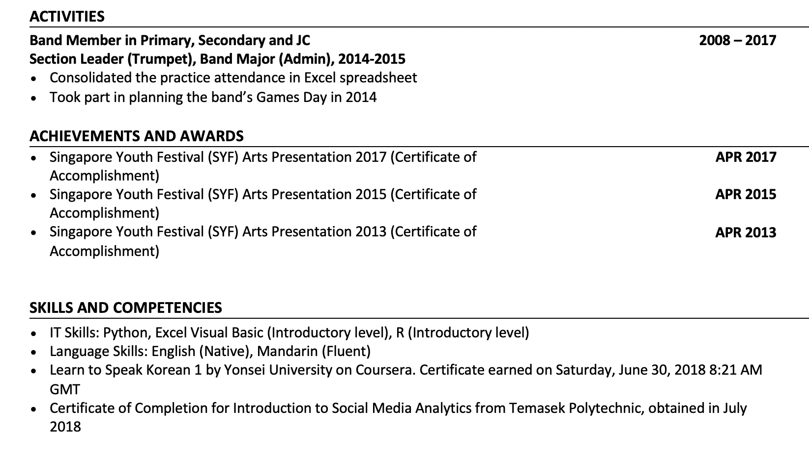

Work Experience
- Writers@Work Enrichment
- English Tuition Centre for Primary and Secondary levels
- Teaching Assistant and Part-Time Teacher
- Reponsibilities include:
- Teaching a regular P4Write class of 3 students from end May 2019 to end September 2019
- Marking and grading scripts, ranging from P2 to APW (Secondary 3 and 4 students)
- List 1
- List 1a
- List 1b
- List 2
- List 3
- List 3a
- List 3b
- List 3(bi)
Singapore University of Social Sciences | Bachelor of Science in Business Analytics | Table Cell 1 .. | Table Cell 1n | Table Cell … | Table Cell … | Table Cell … | Table Cell 1m | Table Cell … | Table Cell mn |

